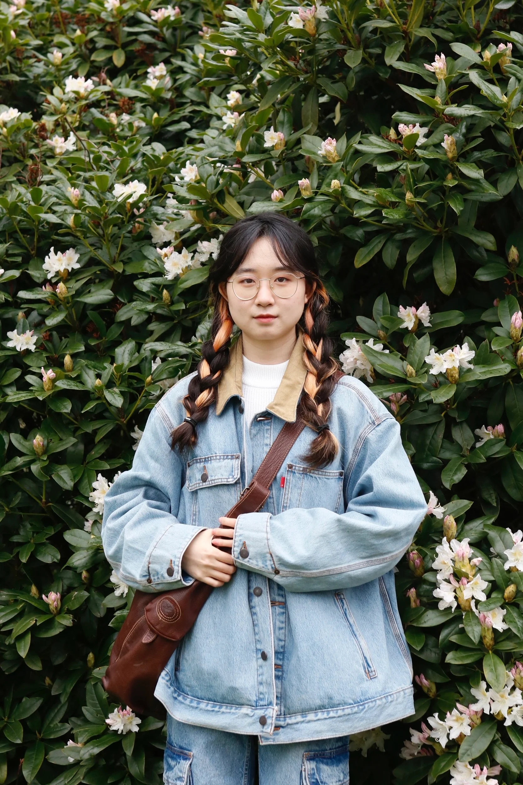
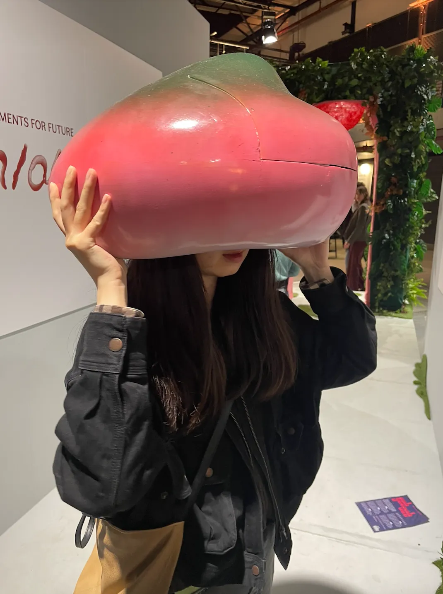
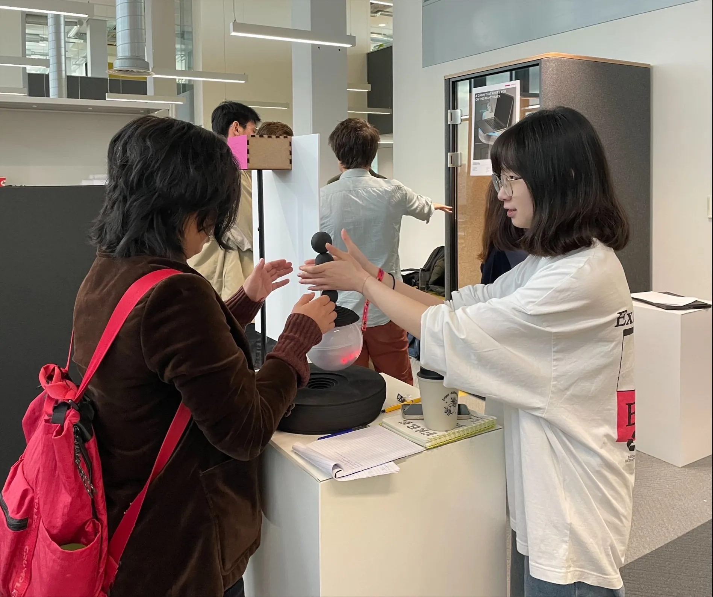
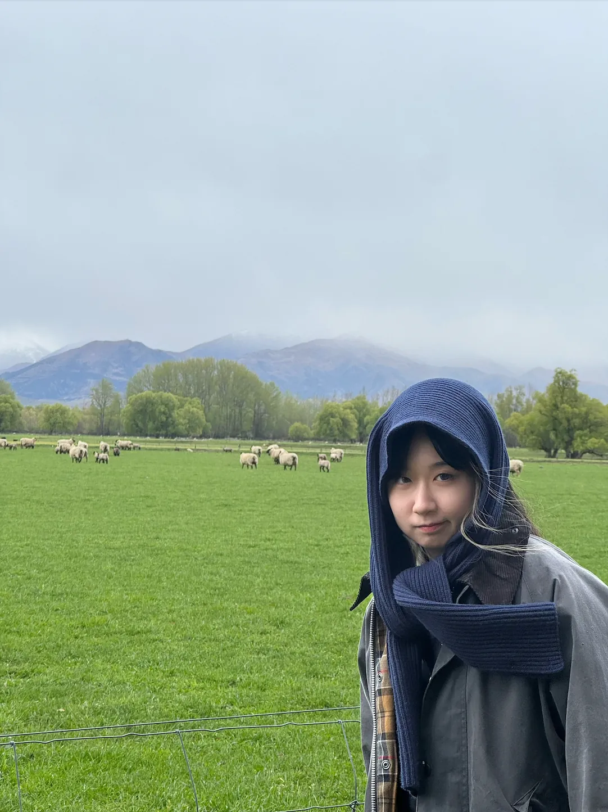
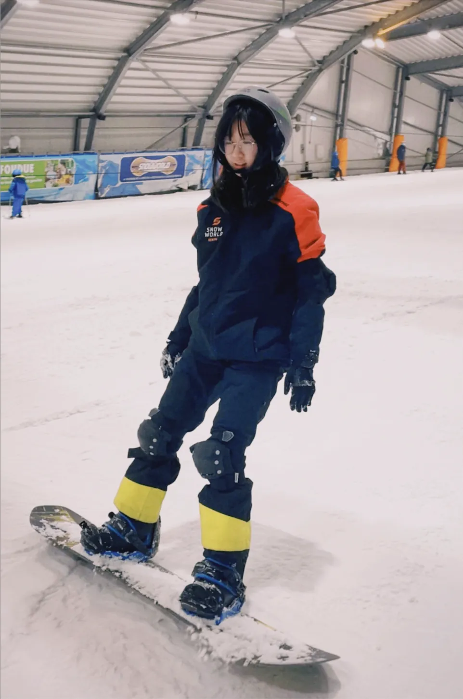
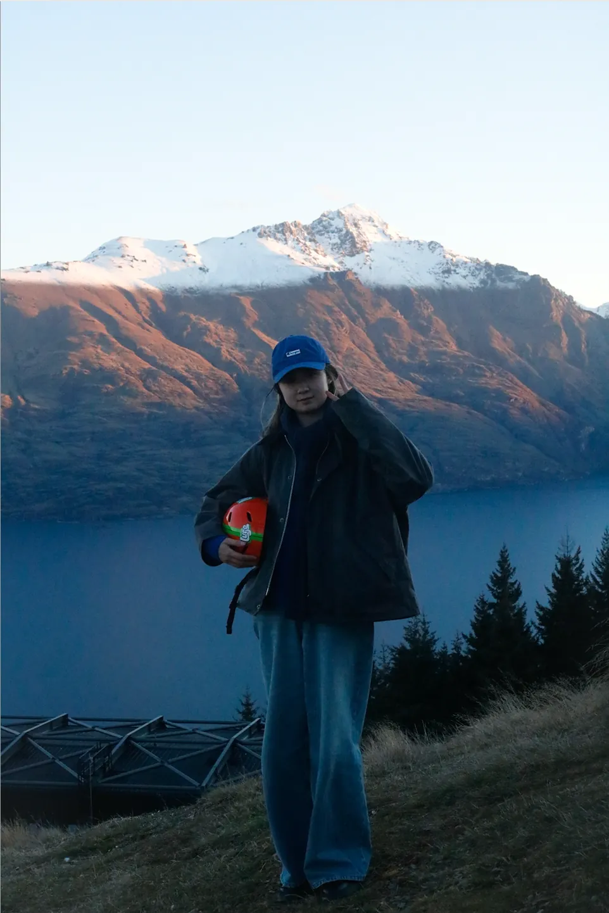
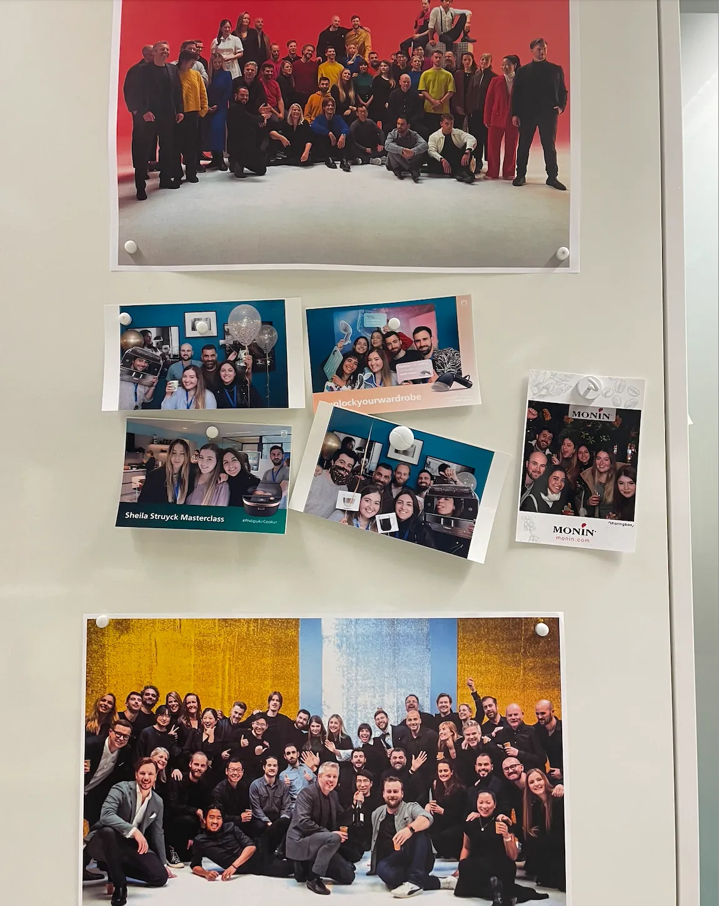
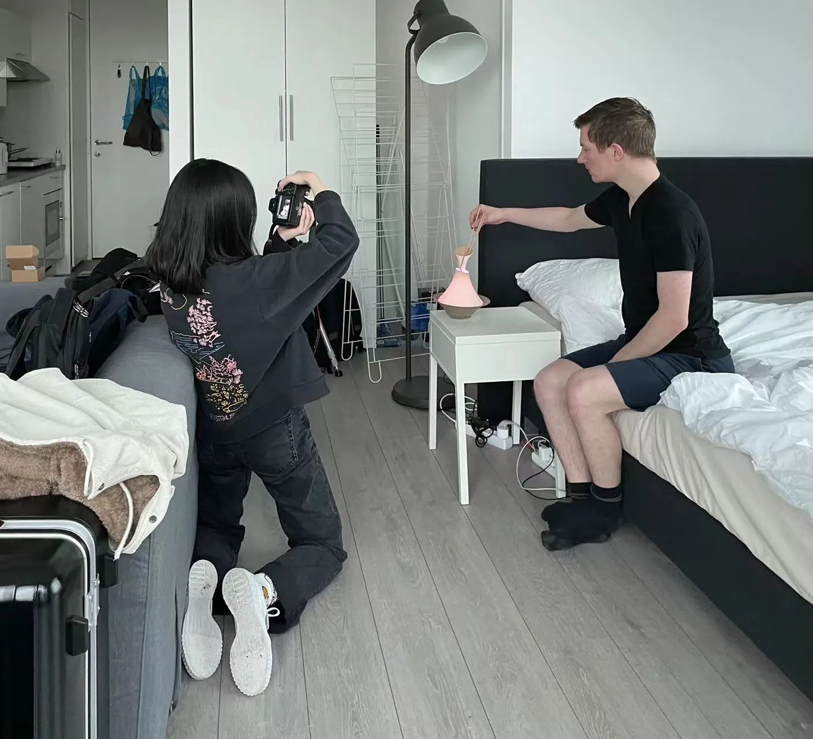

I am an Industrial & Experience Designer specializing in consumer electronics. I previously worked on forward-looking product concepts at Huawei, focusing on redefining products from their core essence and real user behaviors. I believe meaningful innovation doesn’t come from adding more features, but from understanding the most natural ways people interact with objects—and designing experiences that are rich but simple. 我是一名工业与体验设计师，专注于消费电子领域。曾在华为从事前瞻性产品概念设计，致力于从核心本质和真实用户行为出发，重新定义产品。我相信有意义的创新并非源于功能的堆砌，而是基于对人与物最自然交互方式的理解——创造丰富而极简的体验。
Outside of work, I love traveling, hiking, and documenting life through photography—capturing nature, animals, and the human stories hidden in different cities. 工作之余，我热爱旅行、徒步，并用摄影记录生活——捕捉自然、动物以及隐藏在不同城市中的人文故事。
Please enter the password to view work experience.请输入密码以查看详细工作经历。
Industrial Designer | Terminal Innovation (2024.02 - 2026.02) 工业设计师｜终端创新 (2024.02 - 2026.02)
Explored terminal innovation based on market and technology trends, defining large-scale product innovation architectures around imaging experiences, and solving serious homogenization issues in XX products. Conducted qualitative research and validation with agencies, summarized trend insight reports and innovative solutions. Achieved project conversion and yielded 3 key invention patents. 基于市场及技术趋势探索终端创新，围绕影像体验定义大颗粒度产品创新形态架构，解决了XX产品市场同质化严重等问题；联合调研机构进行定性研究与方案验证，总结出趋势洞察报告与创新方案；形成项目转换，输出3项关键发明专利。